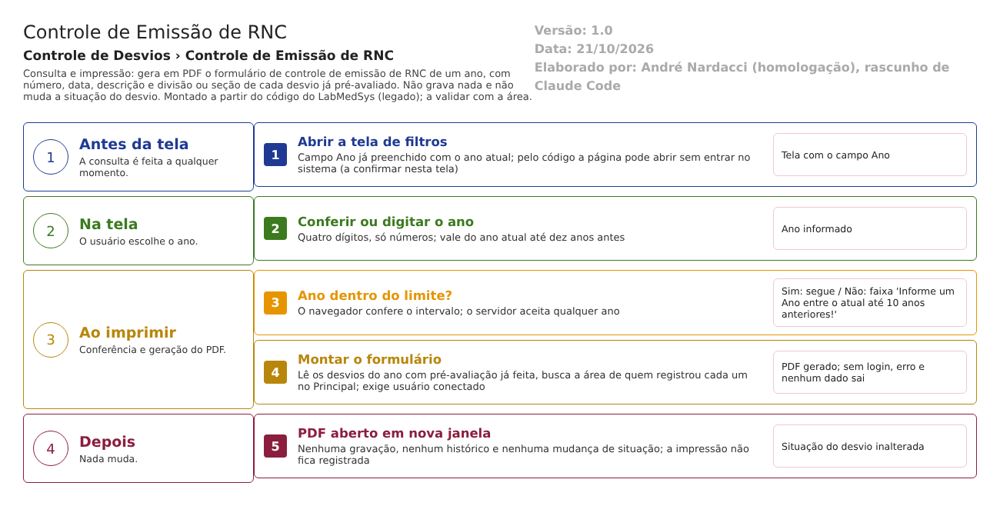

Resumo da tela
Controle de Emissão de RNC
Caminho no menu: Controle de Desvios › Controle de Emissão de RNC (HSolutions.GQ.DB/dml.sql:126). O título no alto da tela é "CONTROLE EMISSÃO RNC" (HSolutions.GQ.UI/Areas/Bloco2/Views/ControleEmissao/Index.cshtml:3).
Para que serve: imprimir em PDF o "Formulário de controle de emissão de RNC" de um ano: a lista dos relatórios de não conformidade (desvios) emitidos naquele ano, com número, data, descrição e divisão ou seção de origem. É um controle da numeração dos relatórios. A tela só consulta e imprime; não grava nada.
Quem usa: a Garantia da Qualidade (GQ) e quem confere a emissão e a numeração dos desvios, por exemplo em auditorias.
Em que situação o desvio chega aqui: depois da pré-avaliação. O relatório só traz desvios que já passaram pela pré-avaliação (a pré-avaliação existe e não está pendente) (HSolutions.GQ.UI/Areas/Bloco2/Controllers/ControleEmissaoController.cs:36-38).
Para onde vai ao salvar: não se aplica. A situação do desvio não muda.
Arquivos do código (caminhos relativos a 5.garantia_qualidade/app/): - Controlador: HSolutions.GQ.UI/Areas/Bloco2/Controllers/ControleEmissaoController.cs (a classe está declarada num espaço de nomes de "Views", sem efeito no funcionamento) - View: HSolutions.GQ.UI/Areas/Bloco2/Views/ControleEmissao/Index.cshtml (não há outras views) - Script: HSolutions.GQ.UI/Areas/Bloco2/Script/ControleEmissaoRNCIndex.js - Relatório: HSolutions.GQ.Reports/Bloco2/RNCControleEmissaoRelatorio.cs, DadosRNCFactory.cs e DadosRNCControleEmissao.cs; layout do PDF em HSolutions.GQ.UI/Areas/Relatorio/Views/Bloco2/RNCControleEmissao.rdlc
Como ler as fontes: "Bloco2/" é HSolutions.GQ.UI/Areas/Bloco2/; "UI/" é HSolutions.GQ.UI/; "Domain/" é HSolutions.GQ.Domain/; "Reports/" é HSolutions.GQ.Reports/Bloco2/; "Lib/" é 10.HSolution.Library/. Quando só aparece o nome do controlador, é ControleEmissaoController.cs.
Estado nos testes: ainda não testada de forma própria. O CT-GQ-025 (relatório com os desvios de teste) não foi executado, e o CT-GQ-026 (abrir sem entrar) foi feito só na tela Acompanhamento RD. Os dois controladores têm a mesma construção (não herdam a base da GQ), mas esta tela ainda não foi aberta sem login.
Manual do usuário
- No menu, abra Controle de Desvios › Controle de Emissão de RNC. A tela tem o bloco Pesquisa com um único campo, Ano, já preenchido com o ano atual. Não há lista na tela: o resultado sai em PDF.
- Se quiser outro ano, apague e digite os quatro dígitos. O campo só aceita números e no máximo quatro dígitos.
- Clique em Imprimir. Uma nova janela abre com o PDF "FORMULÁRIO DE CONTROLE DE EMISSÃO DE RNC", com o ano no alto e as colunas Nº RNC, DATA, DESCRIÇÃO DA NÃO CONFORMIDADE e DIVISÃO/SEÇÃO.
- O ano precisa estar entre o ano atual e dez anos antes. Fora disso aparece a faixa vermelha "Informe um Ano entre o atual até 10 anos anteriores!" e nada é impresso.
- Limpar apaga o campo Ano (que fica vazio) e esconde a faixa vermelha. Imprimir com o campo vazio mostra a mesma faixa vermelha.
- Não há botão Pesquisar, Incluir, Editar, Cancelar ou Visualizar. A tela só tem Limpar e Imprimir.
- Como ler o PDF: cada linha é um desvio que já passou pela pré-avaliação no ano escolhido. Nº RNC é o número com o ano (por exemplo 006/26), DATA é a data e hora do registro do desvio, DESCRIÇÃO é o texto do desvio e DIVISÃO/SEÇÃO é a área da pessoa que registrou o desvio (vazia se a pessoa não tem área).
Campos da tela
Tela (Index)
| Campo na tela | Tipo | Obrigatório | Regra, limite ou valores possíveis | Fonte (arquivo:linha) |
|---|---|---|---|---|
| Faixa de erro | Mensagem | Não se aplica | Mostra "Informe um Ano entre o atual até 10 anos anteriores!" | Index.cshtml:18; ControleEmissaoRNCIndex.js:12-13 |
Colunas do relatório (PDF)
| Campo no relatório | Tipo | Obrigatório | Regra, limite ou valores possíveis | Fonte (arquivo:linha) |
|---|---|---|---|---|
| Cabeçalho: título | Texto fixo | Não se aplica | FORMULÁRIO DE CONTROLE DE EMISSÃO DE RNC | Reports/RNCControleEmissaoRelatorio.cs:34 |
| Cabeçalho: "ANO: aaaa" | Texto | Não se aplica | Ano informado | Reports/RNCControleEmissaoRelatorio.cs:36; RNCControleEmissao.rdlc (parâmetro Ano) |
| Cabeçalho: cliente e logotipo | Texto e imagem | Não se aplica | Vêm da configuração do cliente no Principal | UI/Controllers/Services/ObterRelatorioComConfiguracaoClienteService.cs:53-69 |
| Rodapé: DATA, USUÁRIO e Página x/y | Texto | Não se aplica | Data e hora da impressão, nome de quem imprimiu e paginação | RNCControleEmissao.rdlc (campos Now(), Usuario e PageNumber) |
| Nº RNC | Texto | Não se aplica | Número do desvio com o ano; sem ano gravado, mostra o Id com zeros | Reports/DadosRNCFactory.cs:248; Domain/Entities/Bloco2/ControleDesvios/RegistroNaoConformidade.cs:16-34 |
| DATA | Texto | Não se aplica | Data e hora do registro do desvio, no formato padrão do servidor (data e hora, não só a data) | Reports/DadosRNCFactory.cs:250 |
| DESCRIÇÃO DA NÃO CONFORMIDADE | Texto | Não se aplica | Descrição do desvio | Reports/DadosRNCFactory.cs:249 |
| DIVISÃO/SEÇÃO | Texto | Não se aplica | Área da pessoa que registrou o desvio, buscada no Principal; em branco se a pessoa não tem área | Reports/DadosRNCFactory.cs:241-245,251 |
Botões e ações
| Botão ou ação | Quando aparece | O que faz | Para onde leva o desvio | Fonte |
|---|---|---|---|---|
| Imprimir | Sempre | Confere o ano no navegador e abre o PDF numa nova janela | Não muda o desvio; a tela não grava | Index.cshtml:28; Bloco2/Script/ControleEmissaoRNCIndex.js:6-17; ControleEmissaoController.cs:29-55 |
| Limpar | Sempre | Esvazia o campo Ano e esconde a faixa de erro | Não muda o desvio | Index.cshtml:27; ControleEmissaoRNCIndex.js:1-4 |
| Pesquisar | Não existe | (a tela só tem Limpar e Imprimir) | Não se aplica | Index.cshtml:25-30 |
Mensagens do sistema
| Mensagem (texto exato do código) | Quando aparece | Fonte |
|---|---|---|
| Informe um Ano entre o atual até 10 anos anteriores! | Imprimir com ano maior que o atual, menor que o atual menos dez, ou vazio | Bloco2/Script/ControleEmissaoRNCIndex.js:12 |
| Não foi possível imprimir o Controle Emissão RNC | Qualquer erro ao gerar o relatório | ControleEmissaoController.cs:53 |
| Usuário logado não foi encontrado. | Relatório pedido com usuário ausente depois da leitura da sessão | UI/Controllers/Services/ObterRelatorioComConfiguracaoClienteService.cs:57 |
| Configuração do cliente não foi encontrada | Cliente sem configuração no Principal | UI/Controllers/Services/ObterRelatorioComConfiguracaoClienteService.cs:56 |
Regras de negócio
| ID | Regra | Fonte | Situação |
|---|---|---|---|
| RN-GQ-059 | O Controle de Emissão de RNC imprime os relatórios emitidos. CORREÇÃO: imprime por ano (não por período) e só os desvios que já passaram pela pré-avaliação. Também não agrupa por causa, área ou produto (art. 342 da RDC 658/2022). Obs.: a parte do Acompanhamento RD está na página da tela 13. | ControleEmissaoController.cs:30-46 | Extraída |
| RN-GQ-060 | O controlador não herda a base da GQ (nem a da biblioteca comum). | ControleEmissaoController.cs:18 | A confirmar no teste (o teste de 12/10 foi feito só no Acompanhamento RD, CT-GQ-026) |
| RN-GQ-D14-02 | O filtro usa o ano da data de criação do desvio (a data do registro), e não o ano que compõe o número (AnoRNCN). | ControleEmissaoController.cs:36 | Extraída |
| RN-GQ-D14-03 | Só entram desvios que têm pré-avaliação e cuja pré-avaliação não está pendente. Desvios ainda sem pré-avaliação, e os cancelados antes dela, ficam fora. Inferência: um controle de emissão deveria mostrar todos os números emitidos, inclusive os cancelados, para provar que não há lacuna. | ControleEmissaoController.cs:36-38 | A confirmar no teste |
| RN-GQ-D14-04 | Desvios cancelados depois da pré-avaliação entram no relatório sem marca de cancelamento. | ControleEmissaoController.cs:36-38; Reports/DadosRNCFactory.cs:246-252 | A confirmar no teste |
| RN-GQ-D14-05 | A coluna DIVISÃO/SEÇÃO é a área da pessoa que criou o desvio, consultada no Principal desvio a desvio; sem área, fica em branco. | Reports/DadosRNCFactory.cs:239-245 | Extraída |
| RN-GQ-D14-06 | A coluna DATA mostra data e hora do registro, e não só a data. | Reports/DadosRNCFactory.cs:250 | Extraída |
| RN-GQ-D14-07 | Não há ordenação definida (a ordem é a do banco) nem verificação de lacunas na numeração. | ControleEmissaoController.cs:36-38 | A confirmar no teste |
| RN-GQ-D14-08 | O relatório só é gerado com usuário conectado: o nome do usuário vai no rodapé. Sem sessão, dá erro. | UI/Controllers/Services/ObterRelatorioComConfiguracaoClienteService.cs:46-57; Reports/RNCControleEmissaoRelatorio.cs:32 | A confirmar no teste (mesma construção do Acompanhamento RD, que foi validado) |
| RN-GQ-D14-09 | O PDF sai em folha A4 em pé, com margens de 0,5 cm nas laterais. | Reports/RNCControleEmissaoRelatorio.cs:21-22; HSolutions.GQ.Reports/BaseRelatorio.cs:13,24 | Extraída |
| RN-GQ-D14-10 | O campo Ano vem preenchido com o ano atual do servidor; Limpar o deixa vazio. | Index.cshtml:23; ControleEmissaoRNCIndex.js:1-4 | Extraída |
Situações e histórico
- Situação de entrada: qualquer, mas só entram desvios com pré-avaliação já feita.
- Situação de saída: nenhuma; a situação do desvio não muda.
- O que grava na trilha de auditoria (histórico): nada. A tela não grava.
- O que não grava: quem imprimiu, quando e com que ano. O nome de quem imprimiu e a data e hora saem no rodapé do PDF, mas não ficam guardados no sistema.
Dados
Tabelas do banco tocadas (só leitura)
| Tabela | Colunas principais | Chaves | Uso nesta tela | Fonte |
|---|---|---|---|---|
| TBL_REGISTRO_RNC | RNCN, AnoRNCN, Descricao, DATA_CRIACAO, ID_USUARIO_CRIACAO, PreAvaliacaoRNC_Id | PK do desvio; FK para a pré-avaliação | Filtro por ano e pela pré-avaliação; colunas do relatório | Hsolutions.GQ.DB/Tables/TBL_REGISTRO_RNC.sql; ControleEmissaoController.cs:36-38 |
| TBL_PRE_AVALIACAO_RNC | Situacao | PK da pré-avaliação | Confere se a pré-avaliação existe e não está pendente | Hsolutions.GQ.DB/Tables/TBL_PRE_AVALIACAO_RNC.sql; ControleEmissaoController.cs:37-38 |
O que lê ou grava em outros módulos
| Módulo | O que | Meio | Fonte |
|---|---|---|---|
| Principal | Lista de áreas e a área de cada usuário que criou o desvio (uma consulta por desvio) | API do Principal (GetObterAreaPorUsuario), pelo serviço de áreas | Reports/DadosRNCFactory.cs:233-245; HSolutions.GQ.Services/Principal/AreaService.cs:23-61 |
| Principal | Configuração do cliente (nome, logotipo) | Serviço de configuração da biblioteca comum | UI/Controllers/Services/ObterRelatorioComConfiguracaoClienteService.cs:53-69 |
| Principal | Usuário conectado (nome no rodapé) | Gerenciador de sessão da biblioteca comum | UI/Controllers/Services/ObterRelatorioComConfiguracaoClienteService.cs:39-49 |
| Produção, Estoque, Controle da Qualidade | Nada | Não se aplica | Reports/DadosRNCControleEmissao.cs:9-15 |
Fluxo da tela

- Confere ou digita o ano e clica em Imprimir.
- O navegador confere se o ano está entre o atual e dez anos antes; se não, mostra a faixa vermelha e para.
- O servidor lê os desvios do ano que já passaram pela pré-avaliação, busca a área de quem registrou cada um no Principal e monta o PDF. Sem usuário conectado, dá erro e nenhum dado sai.
- O PDF abre em nova janela. Nada é gravado. Saídas alternativas: ano fora do limite (mensagem), sem login (erro), ano sem desvios (PDF sem linhas, a confirmar).
Falhas e pontos de atenção
- O controle só lista desvios que já passaram pela pré-avaliação (RN-GQ-D14-03). Um controle de emissão tem de provar que cada número emitido está justificado, inclusive os cancelados e os que ainda esperam pré-avaliação. Esta planilha deixa de fora justamente os registros que podem esconder lacuna na numeração (inferência a partir do objetivo do controle; a RDC 658/2022 exige que os registros de desvios sejam rastreáveis e íntegros, art. 125 e art. 148, XII; Guia 33/2020).
- Não há marca de cancelado nem de situação: o desvio cancelado depois da pré-avaliação aparece como qualquer outro (RN-GQ-D14-04).
- Não há verificação de lacunas na numeração nem totais por ano (RN-GQ-D14-07).
- O gerador de número procura o maior número como texto (HSolutions.GQ.Infrastructure/Repository/RegistroNaoConformidadeRepository.cs:22) e pode repetir ou pular números a partir do desvio 1000 do ano (inferência: "999" é maior que "1000" na ordem de texto). Só aparece nesta planilha se a numeração falhar. Detalhe fora desta tela; A confirmar no teste do Relatório de Desvios.
- A coluna DATA mostra data e hora no formato do servidor, e não só a data (RN-GQ-D14-06). O filtro usa o ano do registro (RN-GQ-D14-02); o ano do número é gravado no mesmo momento (Bloco2/Controllers/RegistroNaoConformidadeController.cs:281), então a diferença só apareceria se alguém mudasse a data.
- A área vem do usuário que registrou, pelo cadastro atual: se a pessoa mudou de área depois, o relatório mostra a área de hoje e não a da época (inferência, Reports/DadosRNCFactory.cs:241). O controle perde o "como era".
- A tela de filtros pode abrir sem login, como o Acompanhamento RD (RN-GQ-060; A confirmar nesta tela).
- O erro de impressão usa o nome desta tela (o do Acompanhamento RD copiou deste texto); sem efeito para o usuário.
- Cada desvio faz uma consulta separada ao Principal para achar a área: com muitos desvios a impressão fica lenta (inferência, Reports/DadosRNCFactory.cs:239-245).
- Defeitos confirmados em teste para esta tela: nenhum registrado.
Casos de teste
Preparação comum: desvios de teste (descrição começando por TESTE) criados hoje, por ao menos dois usuários de áreas diferentes: um recém-registrado (sem pré-avaliação), um já pré-avaliado, um cancelado antes da pré-avaliação e um cancelado depois dela. Anotar os números RD.
| Caso | O que verifica | Resultado até agora |
|---|---|---|
| CT-GQ-025 (Baixa) | Tela: Controle de Emissão de RNC. Preparação: desvios de teste de hoje. Fazer: Imprimir com o ano atual. Esperado: PDF com os desvios TESTE pré-avaliados | Sem resultado |
| CT-GQ-N14-01 (Média) | Ano padrão. Fazer: abrir a tela e Imprimir sem mexer. Esperado: o campo mostra o ano atual e o PDF mostra "ANO: aaaa" com o mesmo ano | Sem resultado |
| CT-GQ-N14-02 (Alta) | Ano acima do atual. Fazer: digitar o ano seguinte e Imprimir. Esperado: faixa "Informe um Ano entre o atual até 10 anos anteriores!" e nenhuma janela | Sem resultado |
| CT-GQ-N14-03 (Média) | Limite de dez anos. Fazer: Imprimir com o ano atual menos dez; depois com menos onze. Esperado: o primeiro abre o PDF (sem linhas, se não houver desvios); o segundo mostra a faixa de erro | Sem resultado |
| CT-GQ-N14-04 (Média) | Ano vazio e Limpar. Fazer: Limpar, depois Imprimir. Esperado: campo vazio e a faixa de erro | Sem resultado |
| CT-GQ-N14-05 (Baixa) | Digitação. Fazer: tentar digitar letras, sinais e mais de quatro dígitos. Esperado: só números e no máximo quatro dígitos | Sem resultado |
| CT-GQ-N14-06 (Alta) | Quem entra no relatório. Preparação: um desvio sem pré-avaliação e outro pré-avaliado. Fazer: Imprimir. Esperado pelo código: só o pré-avaliado aparece (RN-GQ-D14-03) | Sem resultado |
| CT-GQ-N14-07 (Alta) | Cancelados. Preparação: um desvio cancelado antes e outro depois da pré-avaliação. Fazer: Imprimir. Esperado pela norma interna de controle de numeração: ambos aparecem, marcados como cancelados. Pelo código, só o segundo aparece, sem marca (RN-GQ-D14-03 e D14-04) | Sem resultado |
| CT-GQ-N14-08 (Média) | Colunas. Fazer: Imprimir e conferir uma linha. Esperado: Nº RNC com ano (006/26), DATA com data e hora, descrição completa, DIVISÃO/SEÇÃO igual à área de quem registrou | Sem resultado |
| CT-GQ-N14-09 (Média) | Área em branco. Preparação: desvio registrado por usuário sem área. Fazer: Imprimir. Esperado: DIVISÃO/SEÇÃO vazia, sem erro | Sem resultado |
| CT-GQ-N14-10 (Baixa) | Ano sem desvios. Fazer: Imprimir com um ano sem registros. Esperado: PDF com o cabeçalho e sem linhas, ou um aviso. Registrar | Sem resultado |
| CT-GQ-N14-11 (Baixa) | Cabeçalho e rodapé. Fazer: Imprimir e conferir cliente, logotipo, ano, data, usuário e página. Esperado: dados corretos | Sem resultado |
| CT-GQ-N14-12 (Média) | Lacunas. Preparação: três desvios consecutivos, o do meio cancelado antes da pré-avaliação. Fazer: Imprimir. Esperado: o controle mostra os três números. Pelo código, o do meio falta, e a lacuna não é sinalizada | Sem resultado |
Divergências encontradas
- RN-GQ-059 (01-regras-de-negocio.md): diz que o Controle de Emissão "imprime os relatórios emitidos". Na verdade imprime por ano, só os desvios que já passaram pela pré-avaliação (ControleEmissaoController.cs:36-38). Corrigido nesta página.
- Documento completo do menu (desvios/controle-de-desvios-documento-completo.md), Tela 14: "O que preencher: Período" e "Botões: Pesquisar e Imprimir". O campo é só o Ano e a tela só tem Limpar e Imprimir (Index.cshtml:21-30). Corrigir o documento.
- Roteiro roteiros/desvios-capa.md, passo 13.2: manda fazer o Controle de Emissão "do mesmo período". A tela pede só o ano. Atualizar.
- Roteiro, passo 14.1, e plano de testes 08, CT-GQ-026: o caso só foi executado no Acompanhamento RD. O Controle de Emissão ainda não foi testado sem login.
- 04-conformidade-regulatoria.md e 11-inventario-de-telas.md: sem divergência de conteúdo; o inventário lista a tela como "Controle de Emissão de RNC (relatório)" e o título na tela é "CONTROLE EMISSÃO RNC" (Index.cshtml:3).